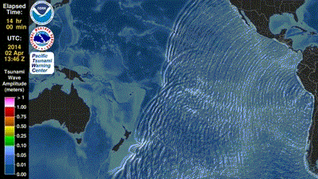
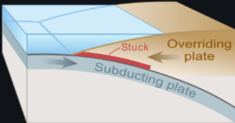
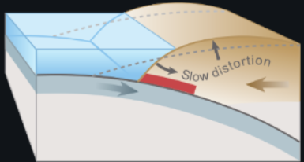
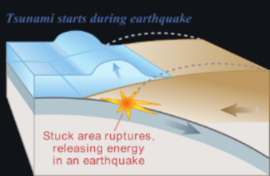
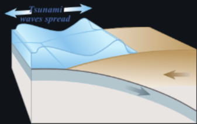

The Breif Definitoin of an OCEAN 🏝️
The ocean is the body of salt water that covers approximately 7️⃣0️⃣.8️⃣% of Earth. The ocean is conventionally divided into large bodies of water, which are also referred to as oceans (the Pacific, Atlantic, Indian, Antarctic/Southern, and Arctic Ocean), and are themselves mostly divided into seas, gulfs and subsequent bodies of water. The ocean contains 97% of Earth's water and is the primary component of Earth's hydrosphere, acting as a huge reservoir of heat for Earth's energy budget, as well as for its carbon cycle and 💧 cycle, forming the basis for climate and weather patterns worldwide. The ocean is essential to life on Earth, harbouring most of Earth's animals and protist life, originating photosynthesis and therefore Earth's atmospheric oxygen, still supplying half of it.
- ◉ Ponds
- ◉ Lake
- ◉ River
- ◉ Seas🏝️
- ◉ Ocean 🌊
Want to know about the difference of all of them click the link below
Tsunami and how do they start 🌊

The above image shows a picture of a tsunami wave .So basically a tsunami is a series of waves in a water body caused by the displacement of a large volume of water, generally in an ocean or a large lake. Earthquakes, 🌋 eruptions and underwater explosions (including detonations, landslides, glacier calvings, meteorite impacts and other disturbances) above or below water all have the potential to generate a tsunami. Unlike normal ocean waves, which are generated by 💨, or tides, which are in turn generated by the gravitational pull of the 🌑 and the ☀, a tsunami is generated by the displacement of water from a large event.
How do they start
tsunamis can be generated when the sea floor abruptly deforms and vertically displaces the overlying water. Tectonic earthquakes are a particular kind of earthquake that are associated with the Earth's crustal deformation; when these earthquakes occur beneath the sea, the water above the deformed area is displaced from its equilibrium position. More specifically, a tsunami can be generated when thrust faults associated with convergent or destructive plate boundaries move abruptly, resulting in water displacement , owing to the vertical component of movement involved. Movement on normal (extensional) faults can also cause displacement of the seabed, but only the largest of such events (typically related to flexure in the outer trench swell) cause enough displacement to give rise to a significant tsunami, such as the 1977 Sumba and 1933 Sanriku events.
Stage 1️⃣
Drawing of tectonic plate boundary before earthquake
Stage 2️⃣
Over-riding plate bulges under strain, causing tectonic uplift.
Stage 3️⃣
Plate slips, causing subsidence and releasing energy into water.
Stage 4️⃣
The energy released produces tsunami waves.
| Year | 1498 | 1868 | 1883 | 1755 | 2011 | 2004 |
|---|---|---|---|---|---|---|
| Event | Enshunada Sea Tsunami | Northern Chile Tsunami | Krakatoa Tsunami | Lisbon Tsunami | Great East Japan Tsunami | Indian Ocean Tsunami |
🌊 How much is unexplored?
Scientists estimate that over 80% of the ocean remains unmapped, unobserved, and unexplored. This means most of Earth’s largest habitat is still a mystery.
🕳️ Why is it so unexplored?
The deep ocean is extremely hard to study because:
- Crushing pressure — over 1,000 times the pressure at sea level
- Complete darkness — no sunlight below ~1,000 meters
- Freezing temperatures — near 0°C in the abyssal plain
- Remote, vast areas — huge distances that are hard to reach and map
What might be down there❔
- Unknown species of fish, squid, jellyfish, and other creatures
- Entire ecosystems around hydrothermal vents
- Hidden mountain ranges, trenches, and underwater volcanoes
- Possibly very large or highly unusual life forms adapted to extreme conditions
Deep-sea creatures already discovered look almost science-fictional: bioluminescent jellyfish, giant squid, transparent fish, and more.
🌋 The deepest known point
The Challenger Deep in the Mariana Trench is the deepest known part of the ocean — about 11,000 meters deep (almost 7 miles).
🚀 Fun fact
We have mapped more of the surface of Mars and the Moon than we have of our own ocean floor!